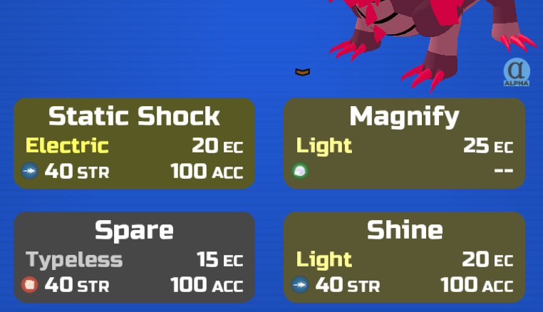
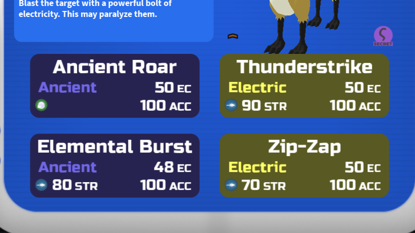
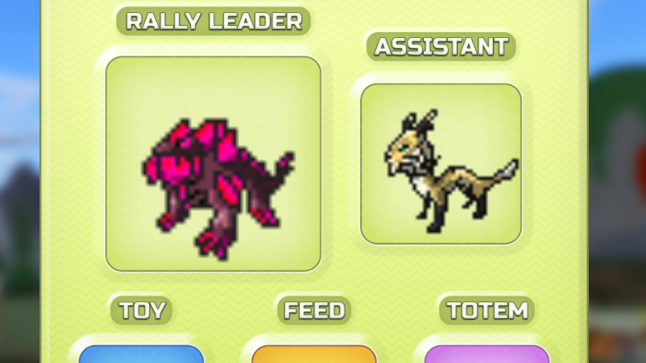
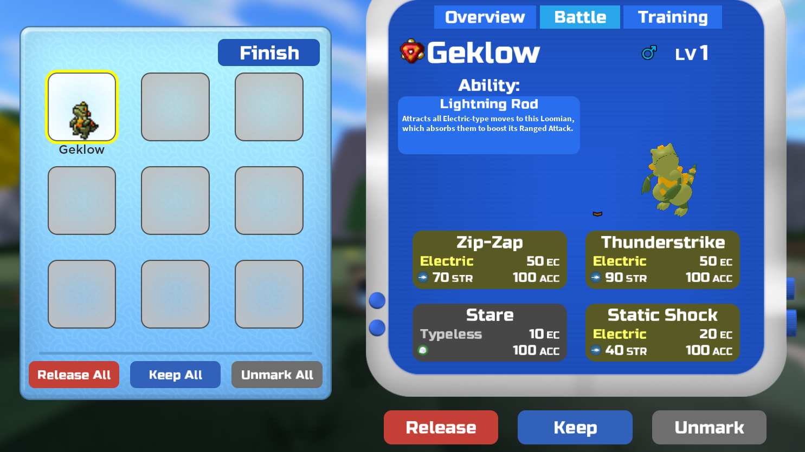
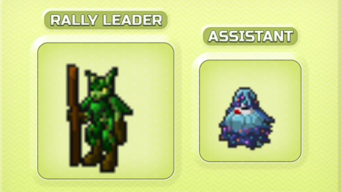
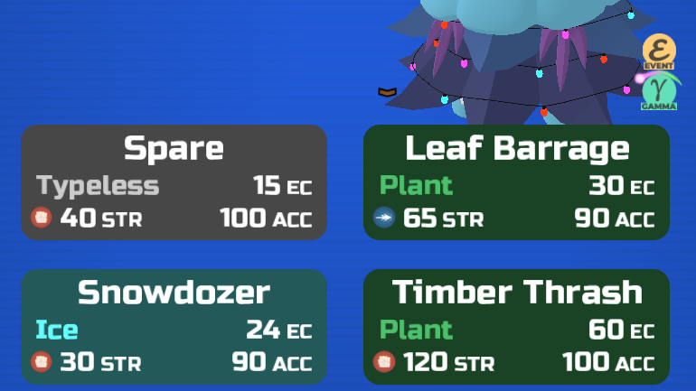
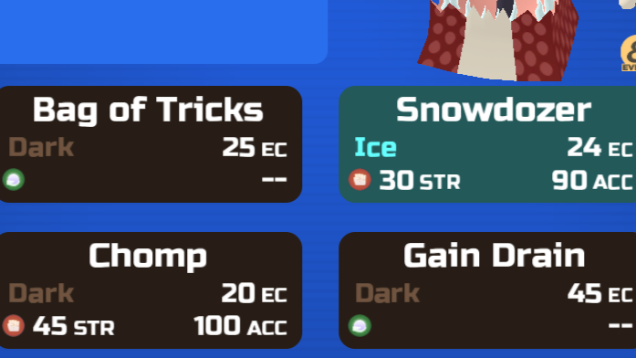
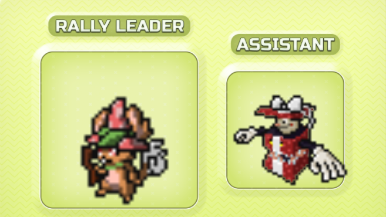
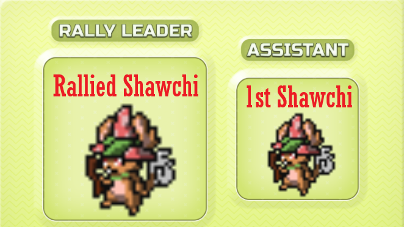
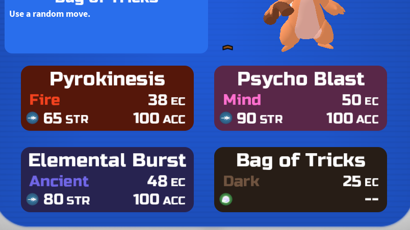

Rally Moves
Rally Moves are moves that Loomians can learn by using Rally Ranch. This is because they are unable to learn it via level up or MM but another Loomian can teach it to them. There are 3 main ways to use Rally Ranch to put a move on a Loomian:
Normal Rally
Normal Rally is where a Rally Move is given to a Loomian when it is rallied.
For Example, If you wanted a new geklow with Thunderstrike (which is a rally move for geklow) you would first need a Geklow or Eleguana as the Rally Leader.
Next, you will need a Loomian who knows the Rally Move you are trying to give to the rallied Loomian. This Loomian can learn this move by MM, Rally or Level-up (though level up will be easier for some to obtain). For this Example we will be using Zuelong.
Put the Eleguana as in the Rally Leader Slot and Insert the Zuelong as the Rally Assistant. A rally cycle will begin and you will need to wait until at least 1 new Loomian is Rallied.
Once at least 1 Loomian has been Rallied, you can check its moveset and it will have the new rally move. Beware that if learning multiple rally moves is possible and the Rallied Loomian does not have enough moveslots then not all the Rally Moves will be passed down.
Reverse Rally
Reverse Rally is used for when you want to teach a Rally Move to a Loomian that already exists. This may be because you want to update the moveset for a PVP Loomian.
First, as a pre requisite, make sure the Loomian - you want to give the rally move to - has an empty moveslot. You can make space by going to the Battle Colosseum and speaking to the Green Shirt NPC who will let you remove any move on your Loomians for free.

After making sure space has been made in the moveset, go to Rally Ranch and Put the Loomian you want to learn the Rally move into the Rally Assistant Slot. The Loomian you want to teach that move needs to be put into the Rally Leader Slot. In this Example, we are trying to get a Tahtab to teach Timber Thrash to the Festifir.
Close the Rally GUI and wait at least 1 minute. Speak to the rally man again and check your Rally Ranch set-up. The Rally Assistant should have the Rally move in their moveset now.
Indirect Rally
One reason to use Indirect Rally to teach a move is because the Loomian that starts off with the move cannot lead Rallies so this strategy combines both Normal and Reverse Rallying.
In this Example we will be trying to teach a Shawchi Bag of Tricks. First find a Loomian that knows the rally move (we will be using Icigool).
Put the Loomian you want to learn the move in the Leader Slot and place the Loomian that knows the move in the Assistant Slot. You will need to wait a few minutes for a Loomian to be rallied.
Once a Rallied Loomian has appeared and it has the Rally Move, collect the Loomian and adjust your Rally set-up so the Loomian so the Rallied Loomian is the Leader and the Loomian you want to teach the move to is now in the Assistant slot. Make sure that this Loomian has a free moveslot by going to the Move Forgetter.
Once again wait a few minutes and when you check on your Loomian in the Assistant Slot it should have learnt the new rally move.
